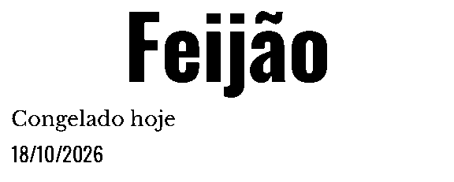
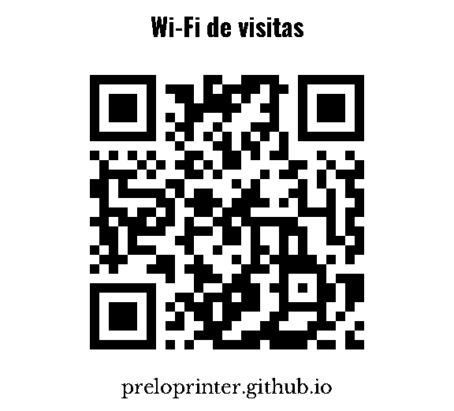

Jornal do dia
Clima da sua cidade, tarefas e agenda do Home Assistant, notícias dos feeds que você escolher, mercado e almanaque. Sai sozinho na hora marcada.
A impressora térmica da casa
Uma impressora de cupom vira a gráfica de casa: um jornalzinho todo dia, recados na bancada, a lista do mercado, etiquetas para os potes. Do Mac, do iPhone e do Claude.

Recursos
Clima da sua cidade, tarefas e agenda do Home Assistant, notícias dos feeds que você escolher, mercado e almanaque. Sai sozinho na hora marcada.
Um bilhete para quem chega, a lista do mercado com caixinhas, páginas pautadas ou quadriculadas do tamanho que precisar.
Texto grande com a data para o pote do congelador, QR code com legenda, o Wi-Fi de visitas pronto para escanear.
O Prelo aparece como impressora no iPhone e no Mac: foto, PDF, página da web ou um texto do Notas saem no papel sem app nenhum.
Servidor MCP embutido: o Claude vê a prévia e imprime recados, listas e o jornal direto na conversa — sem gastar papel à toa.
Monte a peça do seu jeito: texto, imagens, QR, formas. Prévia térmica de verdade antes de imprimir.




Como roda
Instalar no Mac
.dmgBotão acima (Apple Silicon). As versões anteriores ficam na lista abaixo.Versões
O app se atualiza sozinho; se precisar de uma versão anterior, ela continua disponível.
buscando as versões…